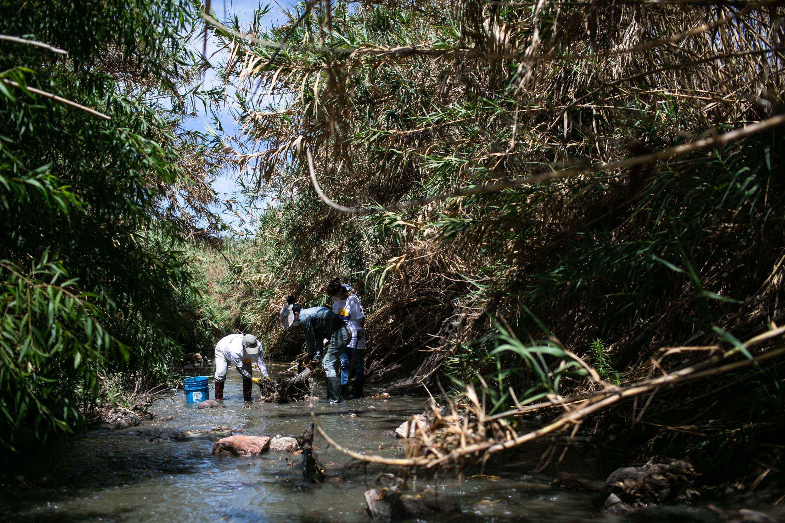
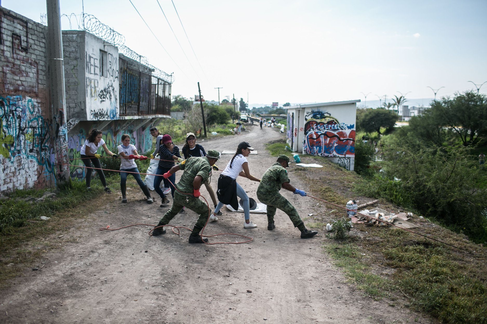
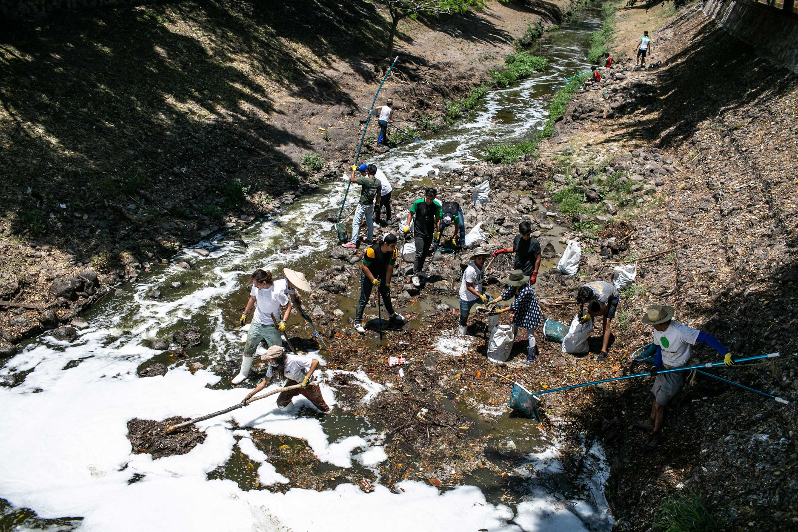
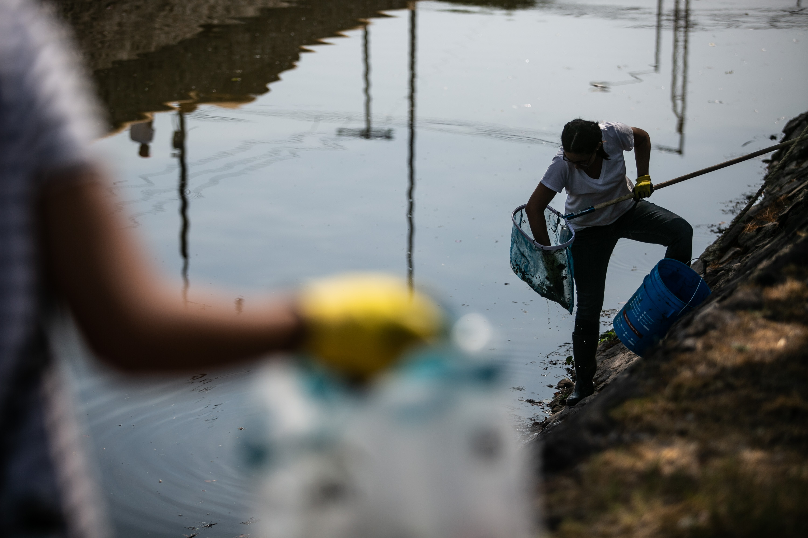

Limpiezas Ciudadanas
¿Qué hacemos en las limpiezas?
Retirar basura sólida del cauce del Río Querétaro; separamos el PET en las recolecciones, realizamos una alianza con el cluster de plásticos de Querétaro para poder reutilizar ese PET e incluso llegar a fabricar botes de plástico con el mismo PET para que la gente deposite ahí el PET y ya no termine en las calles ni en el río. En total han asistido a las limpiezas ciudadanas del río más de 2000 ciudadanos y se han recolectado más de 50 toneladas de basura.
El retirar basura sólida del río es un primer paso pero sin duda uno importante para empezar a llevar a cabo acciones a favor de nuestro río. No solo se trata de sacar basura del río si no de ser más conscientes para generar menos basura, reutilizarla y mantener nuestro río y Ciudad limpios.
Se han llevado a cabo 7 limpiezas ciudadanas que organizamos y nos estamos preparando para la octava.

Primera Limpieza
Nuestro proyecto empezó con la primera limpieza del río
- Domingo 7 de abril
- 200 ciudadanos
- Colonia Hércules en Querétaro

Segunda Limpieza
Se dio a conocer el proyecto y más gente se unió
- Domingo 5 de mayo
- 400 ciudadanos
- ... en Querétaro

Tercera Limpieza
Tercera limpieza ciuadana para el rio
- Domingo 2 de junio
- 500 ciudadanos
- ... en Querétaro

Cuarta Limpieza
Cuarta limpieza ciuadana para el rio
- Domingo 7 de julio
- 300 ciudadanos
- ... en Querétaro

Quinta Limpieza
Empezamos a realizar más acciones a favor del río, como retirar basura sólida del cauce
- Domingo 4 de agosto
- 300 ciudadanos
- Colonia Sta. María Magdalena en Querétaro

Sexta Limpieza
Mega limpieza ciudadana, con concierto gratuito para celebrar el Día Mundial de los Ríos y agradecer a los voluntarios que contribuyen a la limpieza de nuestro río
- Domingo 29 de septiembre: Día Mundial del Río
- +1000 ciudadanos
- Delegación Cayetano Rubio, Colonia Hércules en Querétaro

Séptima Limpieza
Cerramos el año con la séptima limpieza
- Domingo 1 de diciembre
- 200 ciudadanos
- Sección la Cañada en Querétaro